The DNA origami technique has been widely used to design a large variety of innovative three-dimensional devices, such as nanosensors and drug delivery containers. In this project, we designed a half-box-shaped magnetic DNA device made of four dsDNA scaffolds held together with oligonucleotides, named staples. These scaffolds are arranged in such a way that some of their ends overhang from the base of the structure as five single DNA strands. The purpose of these hanging single strands is to bind to aptamers, which will catch specific biomolecules. The structure is hollow, aiming to capture an Iron Oxide Nanoparticle (NP) functionalized with an amino-functional alkoxysilane (APTES). Due to the composition of the NP, the device would have magnetic properties, allowing it to be controlled with a magnetic field. In this way, the device may inspire new methods for drug delivery, biomolecule isolation or medical diagnosis.
Select the section you want to read:
Just a brief explanation of our device, how it works, and its purpose.
Take a look back to all that has been done before us, and to what inspired and support our idea.
A deep look to the first drafts made by the team, from notebook to CaDNAno.
Detailed text and complete explanations of the various applications our device has.
The idea is to design a nanoscale device with magnetic properties made of DNA. This device will be capable of interacting and catching different biomolecules (such as nucleic acids and certain proteins). It has the shape of a box without the top cover. It was constructed with four double stranded scaffolds which are arranged in such a way that five DNA single strands (ssDNA) overhang from the bottom of the device (Fig. 1). These ssDNA will bind to aptamers, which are intended to trap very specific biomolecules.
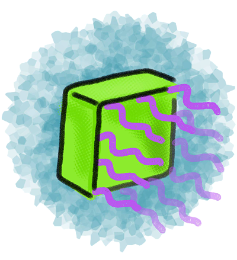Figure 1. Graphic representation of the device
The device will have magnetic properties since an Iron Oxide nanoparticle (IONP), will be attached to its inner part. The nanoparticles will be functionalized with aminosilanes (Fig. 2), which are positively charged in aqueous solution and which will enable the attraction and binding between the nanoparticles and the negatively charged DNA structure. The fact that our device has magnetic properties allow us to control it with magnetism, and the method of isolation with this procedure will be similar to that one of the DynaBeads.

Figure 2. Charges of DNA and the IONP functionalized with aminosilane in aqueous solution.
The device was built using a technique called DNA Origami. DNA Origami is a method for folding long, single-stranded DNA molecules into arbitrary two-dimensional shapes (Rothemund, 2006). This technique has been used to create figures in 2D and 3D, for example, DNA nano-containers to encapsulate nanoparticles (Kuzuya et al., 2015).
DNA encapsulation is not a new technique, for several years it has taken a very important role in the scientific field (Kuzuya et al., 2014). In nature, the method of encapsulation is used by bacteria and different organisms to protect themselves (Perrault y Shih, 2014). DNA encapsulation is a technique that has different benefits, and one of the most interesting applications that are now being investigated is how this method could function to help in the detection and treatment of cancer.
Regarding the treatment of cancer, biomedical nanotechnology has been interested in this type of projects. Besides having several advances in different scientific areas, biomedical nanotechnology has “focused on improving the detection and treatment of cancer by increasing the bioavailability and targeting specificity of anticancer agents” (Perrault y Shih, 2014).
“The rapidly growing field of structural DNA nanotechnology could advance these aims by expanding the range of available nanoparticle geometries and improving the precision of ligand functionalization, two key design parameters” (Perrault y Shih, 2014).
A study made by the scientists Perrault and Shih is based in “the functioning of viruses, small agents who have developed encapsulation methods that allow the protection of their genome, as well as the lipid envelope” (Perrault y Shih, 2014). Considering this, they have worked on a structure made in caDNAno whose name is Nano Octahedron DNA. This nanostructure, inspired in the virus shape, is wrapped in lipid bilayers that protect it from nuclease digestion.
Another of the most important functions of the DNA encapsulation is the targeted delivery of drugs. However, because of problems with the immune system and the instability of the drugs to be released into the body, its use is not safe (Perrault y Shih, 2014). Therefore, it is still being investigated how it can be optimized for use in living systems.
The functionalization of DNA origami structures is very useful, but it is limited since the most common technique of DNA origami uses one scaffold, and that results in having only two edges that can be functionalized. With our design, which involves four long DNA strands for the construction of the structure, the potential of functionalization is extended. Since now we have the ends of four long DNA strands that overhang from the bottom of the device as five ssDNA, we have more ends available for functionalization. It is possible to design and adapt the ends of each one of these four different DNA strands in order to capture any specific biomolecule, and thus the device becomes very versatile and adaptable. These ssDNA capable of trapping very specific biomolecules are called aptamers.
“Aptamers are short synthetic single-stranded oligonucleotides that specifically bind to various molecular targets such as small molecules, proteins, nucleic acids, and even cells and tissues” (Ni et al., 2011). They are chemically equivalent to antibodies.
Functionalized DNA structures have already been created in order to detect and trap certain molecules. For example, some "tiles" made with DNA origami have been constructed in order to trap RNA molecules (Ke, 2008). Another example is a 3D DNA network created by the MIT, which is capable of efficiently trapping specific cancer cells in order to increase its concentration.
By functionalizing our device, the variety of applications that it can have gets wider, because it will be possible to make the nanostructure catch specific biomolecules with the aid of aptamers.
The device would be capable of trapping and isolating biomolecules such as antibodies, metabolites, proteins associated with DNA, transcription factors, RNA and DNA. This would be useful to increase the concentration and purity of the biomolecule to be isolated.
The idea of using oligonucleotides to functionalize DNA structures is based on the fact that DNA chains may be associated with biomolecules such as RNA, DNA and proteins. There are proteins that can interact with the DNA either in a specific or a non-specific way, such as histones, DNA polymerases and DNA ligases, helix destabilizing proteins and DNA topoisomerases. This opens a great possibility of applications: the isolation of molecules, recognition of antibodies and receptors within the human body, or as a base for possible nanosensors.
The caDNAno software was used for the design of the prototype. For practical and economical reasons, the present model is pretty small but it could be adapted and designed in order to be bigger in size. An open-topped box shaped figure, i.e. four side walls and a base (Fig. 3) was created. Furthermore, the device has five single overhanging strands at its base, which are meant to functionalize the device (Fig. 4). Each nucleotide of a single-strand of DNA has a charge of -1, and is connected to another one through an hydrogen bond, giving each base pair a charge of -2. The more bases a chain has, the more negative is the charge of this chain. This negativity makes the base pairs to repel one another, making the DNA locally stiff but globally flexible, however, this depends too on the concentration of salts in the aqueous environment (Mills, 2004). This negativity of the DNA was used to attract magnetic nanoparticles of Fe2O3 functionalized with aminosilanes in order to interact with the device and being able to use magnetism to control it. All this with the purpose of making an isolating process similar to the Dynabeads.
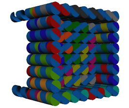Figure 3. Side view of the device.
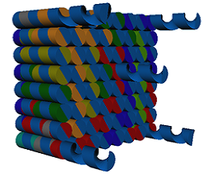Figure 4. Bottom view of the device.
Each of the single strands located at the base are standardized and designed so that they form words using the genetic code:
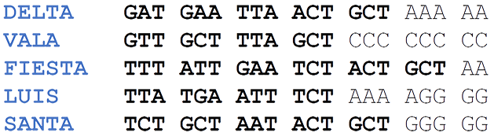This device was designed with the following dimensions: each side has a measure of 8x8 double helixes (~ 20nm each side), 22 base pairs high (~ 7.5 nm), 13 base pairs deep (~ 4.5nm) and the overhanging single strands have a length of 20 nucleotides (~ 7nm).
The device is composed of four long sequences (scaffolds), which are held together with 33 oligonucleotides (called staples) of approximately 31 nucleotides each. (Fig. 5)
Table 1. Device Scaffolds.
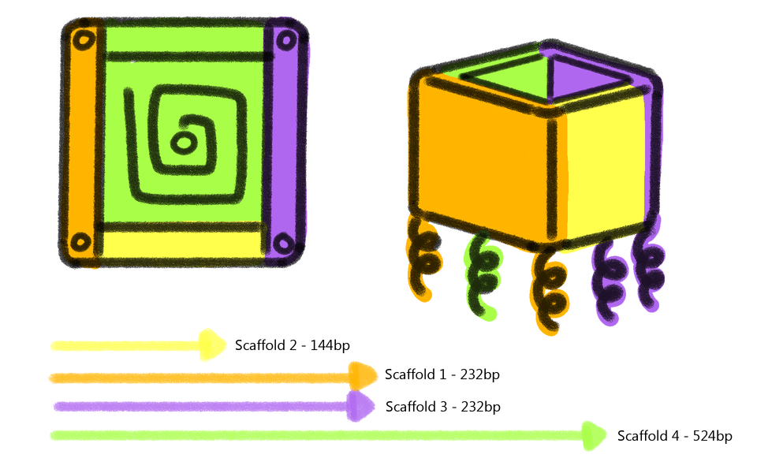
Figure 5. Arrangement of the scaffolds in the device.
Isolation of biomolecules:
In order to perform this function, the device features five ssDNA which will bind to aptamers. This aptamers capture nucleic acids or proteins due to their complementary sequences or another type of interactions respectively.
1. The device has five ssDNA, standardized in order to be adaptable. This is the reason why it is possible to change the sequence responsible of capturing the desired biomolecules each time the device is used. Therefore, by knowing the standardized sequence and the restriction site, it is possible to match its complementary part, so that the only thing that overhangs is the ssDNA which corresponds to the target sequence to be isolated. In case that the desired sequence is a nucleic acid or a protein, the next steps will be followed.
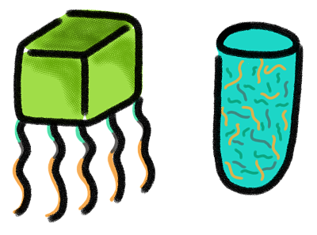2. Once the target sequence to be isolated has been chosen, the aptamers will be designed to be complementary to the desired biomolecule and to the standard ssDNA which overhang from the bottom of the device. Then, the device paired with the aptamers, will be introduced in a solution that contains the desired sequence in order to catch it.
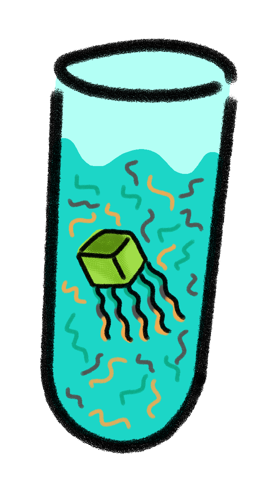3. A magnet will attract the device. By this moment, it will have hybridized the isolated sequence. Supernatant will be deposited into another container.
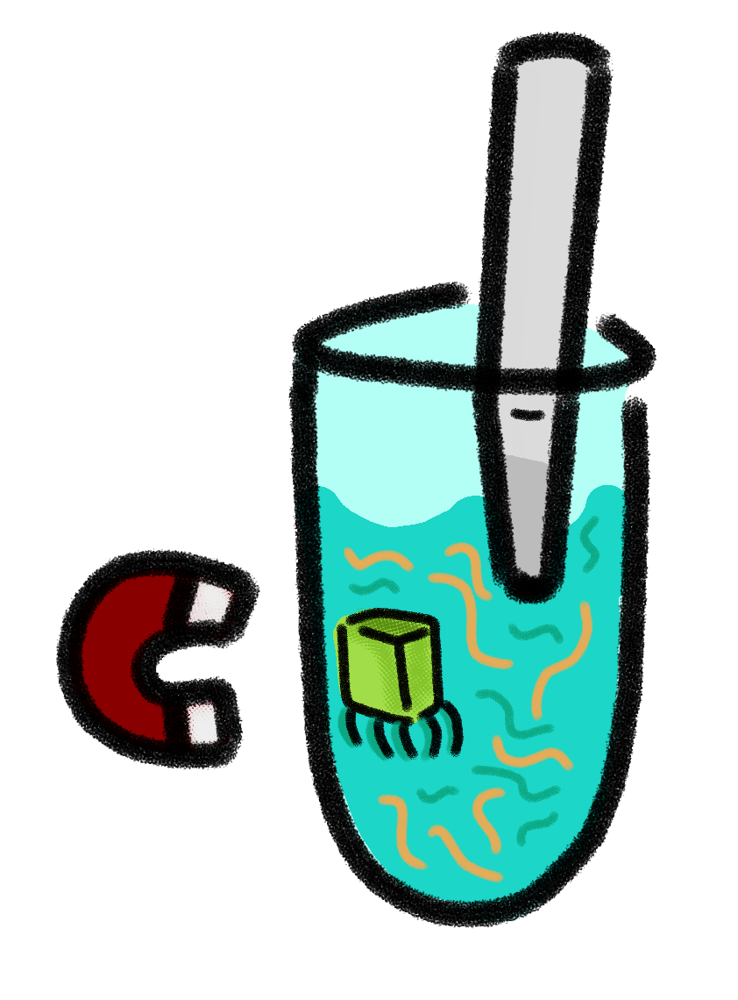4. The next step is to resuspend in water.
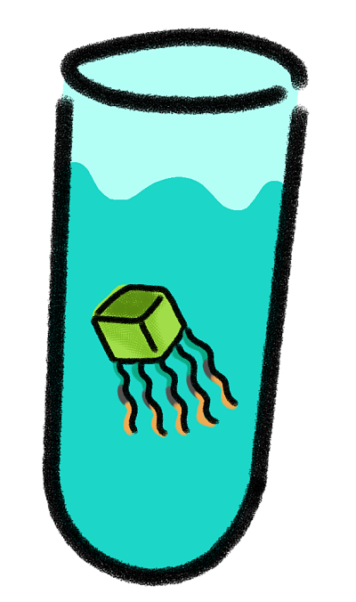5. The next step is to add the restriction enzyme that corresponds to the restriction site of the device in order to separate the sequence that will be isolated.
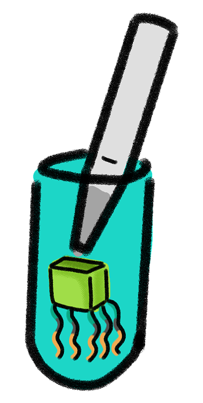6. The enzyme will separate our target sequence from the device, so it will be possible to use a magnet to attract the box-shaped structure, and we will take only the isolated sequences.
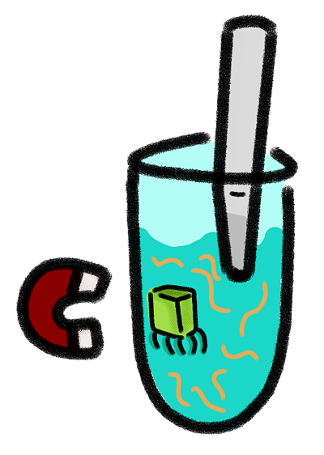7. Finally, the desired sequences will be isolated.
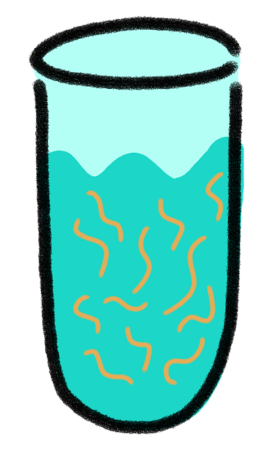
Ke, Y., Nangreave, J., Yan, H., Lindsay, S., & Liu, Y. (2008). Developing DNA tiles for oligonucleotide hybridization assay with higher accuracy and efficiency. Chemical Communications., (43), 5622-5624.
Kuzuya, A., Kaino, M., Hashizume, M., Matsumoto, K., Uehara, T., Matsuo, Y., ... & Ohya, Y. (2015). Encapsulation of a gold nanoparticle in a DNA origami container. Polymer Journal, 47 (2), 177-182.
Kuzuya, M., Fujii, R., Hamano, M., Kida, K., Mizoguchi, Y., Kanadani, T., ... & Kishimoto, T. (2014). Prevalence and molecular characterization of G1P [8] human rotaviruses possessing DS‐1‐like VP6, NSP4, and NSP5/6 in Japan. Journal of medical virology, 86 (6), 1056-1064.
•Mills, J. & Hagerman, P. (2004) Origin of the intrinsic rigidity of DNA. Oxford Journals, 32 (13), 4055-4059.
Ni, X., Castanares, M., Mukherjee, A., & Lupold, S. E. (2011). Nucleic acid aptamers: clinical applications and promising new horizons. Current Medicinal Chemistry, 18 (27), 4206–4214.
Perrault, S. D., & Shih, W. M. (2014). Virus-inspired membrane encapsulation of DNA nanostructures to achieve in vivo stability. ACS nano, 8 (5), 5132-5140.
Rothemund, P. W. (2006). Folding DNA to create nanoscale shapes and patterns. Nature, 440 (7082), 297-302.